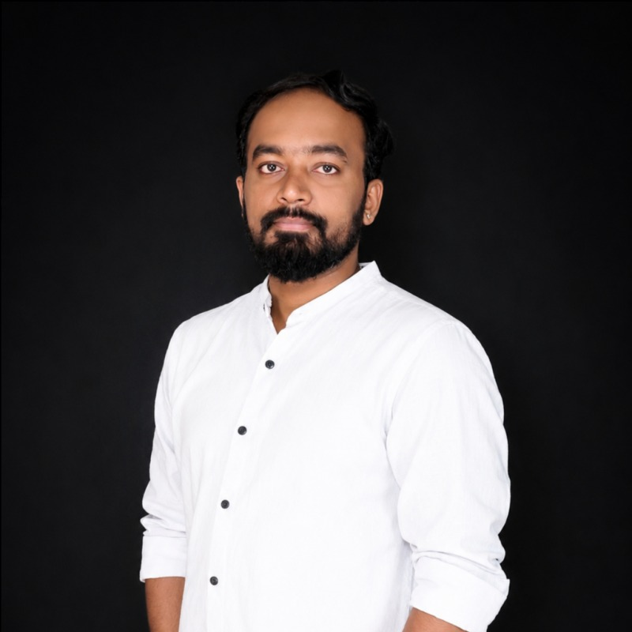

Market & competitor research
Primary and secondary research, industry profiling, competitor analysis, and customer segmentation to identify relevant business opportunities.
Senior Market Research Analyst
Turning market insights
into business opportunity.
I’m Kiran M. I connect market intelligence, the right accounts, and reliable data to help sales and marketing teams make informed decisions.

My experience spans market research, IT consulting, and B2B lead generation. I bring a practical understanding of customer needs, technical solutions, and the information sales teams need to move forward.
At PriceEasy, I research industries and competitors, identify decision-makers, maintain prospect and CRM data, and support revenue operations. I also help coordinate trade shows, vendors, and event logistics.
From understanding a market to supporting a sales conversation, I help turn research into useful, actionable information.
Primary and secondary research, industry profiling, competitor analysis, and customer segmentation to identify relevant business opportunities.
Researching target companies, qualifying B2B prospects, identifying key decision-makers, and developing buyer personas for outbound campaigns.
Maintaining accurate CRM records, sales trackers, and performance reports, with hands-on support for technical sales and industry events.
A practical approach shaped by market research, prospecting, and cross-functional sales support.
Understand the business requirement, industry, geography, and target customer.
Research market trends, competitors, accounts, and relevant decision-makers.
Validate research and maintain consistent, accurate prospect and CRM data.
Share actionable insights, trackers, and reports with sales and marketing teams.
Working across research, technology, and business development to connect information with business needs.
Recognition for consulting, revenue contribution, and customer service, as listed in my résumé.
November 2023 · February 2024 · September 2024
Q3 2021 · Recognized for exceeding sales and revenue targets.
2018 · Recognized for performance and contribution to business growth.
August & September 2017 · Customer service and support.
Have a market research, sales intelligence, or business development opportunity in mind? Let’s connect.
Connect on LinkedIn